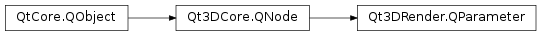

Qt3DRender.QParameter¶
Synopsis¶
Signals¶
- def
nameChanged(name) - def
valueChanged(value)
Detailed Description¶
Provides storage for a name and value pair. This maps to a shader uniform.
A
QParametercan be referenced by aQRenderPass,QTechnique,QEffect,QMaterial,QTechniqueFilter,QRenderPassFilter. At runtime, depending on which shader is selected for a given step of the rendering, the value contained in aQParameterwill be converted and uploaded if the shader contains a uniform with a name matching that of theQParameter.QParameter *param = new QParameter(); param->setName(QStringLiteral("diffuseColor")); param->setValue(QColor::fromRgbF(0.0f, 0.0f, 1.0f, 1.0f)); // Alternatively you can create and set a QParameter this way QParameter *param2 = new QParameter(QStringLiteral("diffuseColor"), QColor::fromRgbF(0.0f, 0.0f, 1.0f, 1.0f)); // Such QParameters will work with the following GLSL uniform shader declarations // uniform vec4 diffuseColor; // uniform vec3 diffuseColor; // uniform vec2 diffuseColor; // uniform float diffuseColor;Note
some care must be taken to ensure the value wrapped by a
QParametercan actually be converted to what the real uniform expect. Giving a value stored as an int where the actual shader uniform is of type float could result in undefined behaviors.Note
when the targeted uniform is an array, the name should be the name of the uniform with [0] appended to it.
QParameter *param = new QParameter(); QVariantList values = QVariantList() << 0.0f << 1.0f << 2.0f << 3.0f << 4.0f << 883.0f << 1340.0f << 1584.0f; param->setName(QStringLiteral("diffuseValues[0]")); param->setValue(values); // Matching GLSL shader uniform declaration // uniform float diffuseValues[8];When it comes to texture support, the
QParametervalue should be set to the appropriateQAbstractTexturesubclass that matches the sampler type of the shader uniform.QTexture2D *texture = new QTexture2D(); ... QParameter *param = new QParameter(); param->setName(QStringLiteral("diffuseTexture")); param->setValue(QVariant::fromValue(texture)); // Works with the following GLSL uniform shader declaration // uniform sampler2D diffuseTextureSee also
-
class
PySide2.Qt3DRender.Qt3DRender.QParameter([parent=nullptr])¶ -
class
PySide2.Qt3DRender.Qt3DRender.QParameter(name, texture[, parent=nullptr]) -
class
PySide2.Qt3DRender.Qt3DRender.QParameter(name, value[, parent=nullptr]) Parameters: - value – object
- texture –
PySide2.Qt3DRender.Qt3DRender::QAbstractTexture - name – unicode
- parent –
PySide2.Qt3DCore.Qt3DCore::QNode
Constructs a new
QParameterwith the specifiedparent.Constructs a new
QParameterwith the specifiedparentnameand takes its value fromtexture.Constructs a new
QParameterwith the specifiedparentnameandvalue.
-
PySide2.Qt3DRender.Qt3DRender.QParameter.name()¶ Return type: unicode See also
PySide2.Qt3DRender.Qt3DRender::QParameter.setName()
-
PySide2.Qt3DRender.Qt3DRender.QParameter.nameChanged(name)¶ Parameters: name – unicode
-
PySide2.Qt3DRender.Qt3DRender.QParameter.setName(name)¶ Parameters: name – unicode See also
PySide2.Qt3DRender.Qt3DRender::QParameter.name()
-
PySide2.Qt3DRender.Qt3DRender.QParameter.setValue(dv)¶ Parameters: dv – object See also
PySide2.Qt3DRender.Qt3DRender::QParameter.value()
-
PySide2.Qt3DRender.Qt3DRender.QParameter.value()¶ Return type: object See also
PySide2.Qt3DRender.Qt3DRender::QParameter.setValue()
-
PySide2.Qt3DRender.Qt3DRender.QParameter.valueChanged(value)¶ Parameters: value – object
© 2018 The Qt Company Ltd. Documentation contributions included herein are the copyrights of their respective owners. The documentation provided herein is licensed under the terms of the GNU Free Documentation License version 1.3 as published by the Free Software Foundation. Qt and respective logos are trademarks of The Qt Company Ltd. in Finland and/or other countries worldwide. All other trademarks are property of their respective owners.